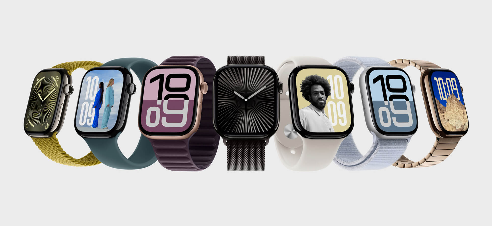
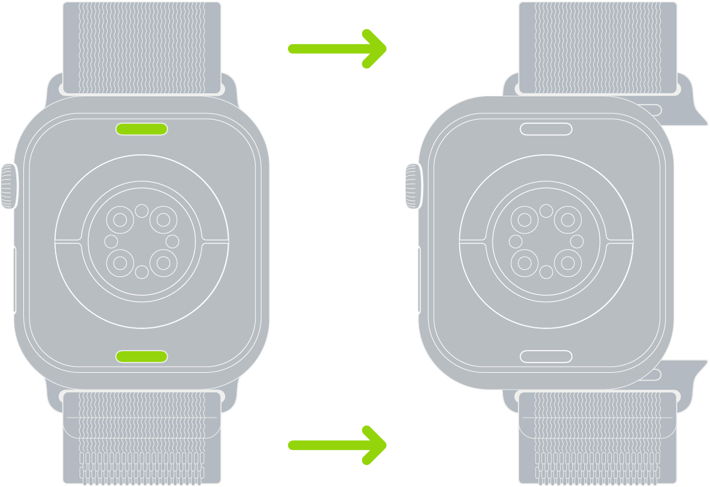
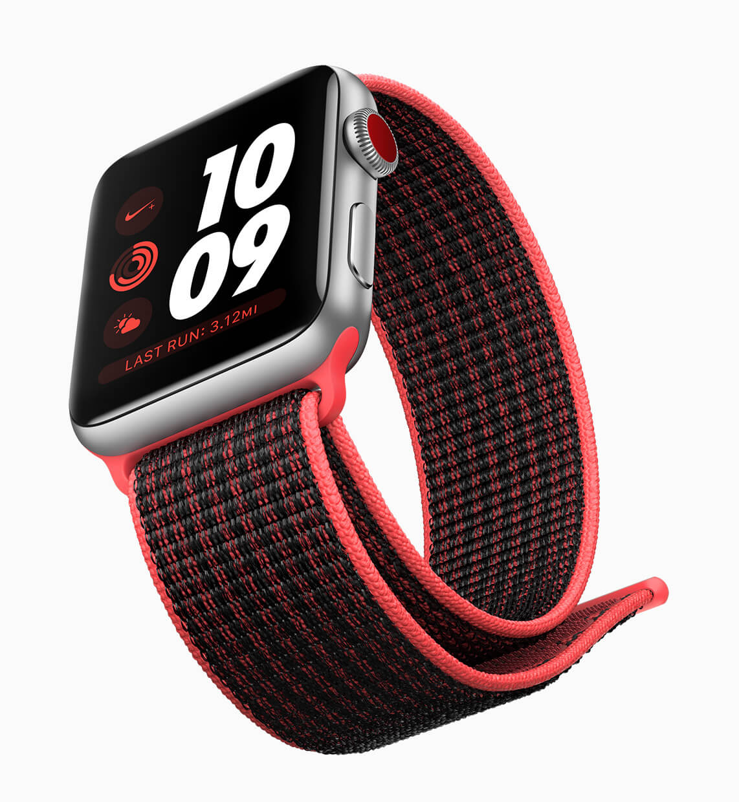
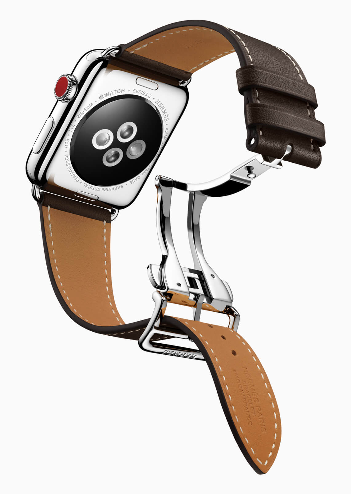
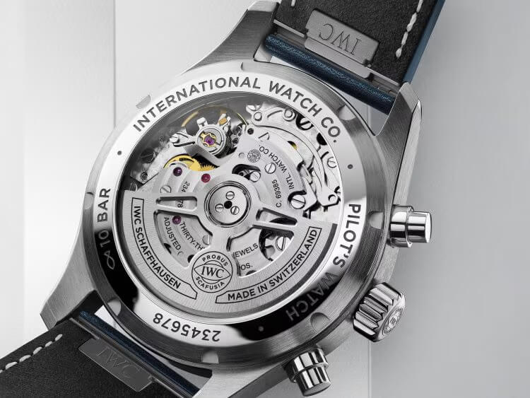

How Apple Revolutionized the Watch Strap Market
For a long time changing a watch strap was a job for jewelers or only a few determined enthusiasts. It involved a tiny, forked spring bar removal tool, a steady hand, and… the risk of scratching a watch. The strap was an afterthought, just a thing that attaches a watch onto your wrist. Then, in 2015, Apple introduced its smartwatch, and among other things, we were in awe of one clean, satisfying "click." That click was the sound of an Apple Watch band sliding and connecting perfectly into place.
 Nenad Pantelic • April 30, 2024
Nenad Pantelic • April 30, 2024

For sure, the Apple Watch as a tech device was a revolution, but I would say that the new strap system was a complete reimagining of how we personalize our watches. By transforming the watch strap from a static component into a dynamic and fun accessory, Apple didn't just create a new product, but it created an entirely new market.
This (finally) forced a centuries-old watch industry to take notice. And to rethink its approaches.
A Hobby Limited by the spring bar
Before the Apple Watch, the watch strap market was defined by the spring bar: a small, spring-loaded rod that held the strap to the watch case. Yes it was functional, but it created a huge barrier for the average consumer. Changing a strap was difficult it discouraged the idea of frequent customization.
As a result, the strap a watch came with was often the strap it kept for life. The industry focused on the watch head: the movement, the dial, the case finishing. The strap was a low-margin service part, and its attachment method was a legacy standard that offered no incentive for user-focused innovation. There were some quick-release systems in the market, but they were a niche feature for enthusiasts, not a mass-market expectation. Apple saw this gap and exploited it perfectly.
The Apple Strategy: Engineering, User Experience, and a Fashion Platform
Apple’s plan was to treat the strap not as an accessory, but as a core feature of the watch. This strategy was built on three pillars:
A Revolution in User Experience: Apple developed proprietary slide-and-click mechanism. It replaced the tricky spring bar tool with an elegant, tool-less system. A custom connector on the band slides into a channel on the watch case and locks with an audible click. A small button on the case back releases it just as easily.
Apple kept this connector design consistent across all later watch generations, to make sure straps were backward compatibile.

Marketing as a Personal Statement: From day one, the Apple Watch was billed as "the most personal product we've ever made". The marketing didn't focus on tech specs but on self-expression. The message was clear: this was a fashion item first, a gadget second.
Borrowed Luxury Credibility: To counter the perception of a disposable tech gadget, Apple partnered with Hermès just five months after the watch's release. Hermès gave the Apple Watch instant luxury legitimacy.


Innovations Down to the Buckle
Apple's obsession with user experience extended to the closures.
The default Sport Band introduced the "pin-and-tuck" system, which neatly hides the excess strap tail for a clean, snag-free fit.
The stainless steel Link Bracelet was a marvel of micro-engineering, featuring quick-release buttons on the links themselves, allowing for perfect, tool-less sizing in seconds.
Even the Milanese Loop and Modern Buckle used magnets to create closures that were secure, elegant, and infinitely adjustable.
Apple further fueled the market this by adopting a fashion industry calendar, releasing new strap colors and materials seasonally. This created a constant cycle of newness, turning the strap into a collectible, trend-driven accessory and a powerful recurring revenue stream. A user might not buy a new watch every year, but a new $49 band was an easy way to refresh their existing device.
The Swiss Took Notice
The traditional watch industry, initially dismissive, was forced to take notice. During the initial release Hodinkee praised Apple's design and build quality, noting it "blows away anything... in the watch space at $350" and correctly predicting it would be a big problem for low-priced quartz watches.
In the following years, a wave of reactive innovation swept through Switzerland. What was once a niche feature became a competitive necessity.
In 2016, Vacheron Constantin launched its redesigned Overseas collection with a heavily marketed interchangeable strap system.Hublot followed with its "One Click" system, and soon brands like Cartier, IWC, and Zenith all had their own proprietary tool-less mechanisms.

The expectation of easy personalization had been permanently reset.
Here is a brief overview:
| Brand | Proprietary System Name | Year of Introduction | Key Feature |
| Vacheron Constantin | Self-Interchangeability System | 2016 | Release trigger on strap/bracelet for tool-free removal |
| Hublot | One Click | 2017 | Two push-buttons on the case for instant strap release. |
| Cartier | QuickSwitch | 2018 | Invisible mechanism under the strap activated by a single press. |
| Zenith | Strap-change mechanism | 2020 | Push-button system on the case back for easy strap swapping. |
| IWC Schaffhausen | EasX-CHANGE | 2021 | Integrated push-button system for rapid strap and bracelet changes. |
Thanks to Apple the expectation of easy personalization had been permanently reset.
Today, we live in a different world
If you had told me a decade ago that I would own more watch straps socks, I would have laughed. Yet, here we are. Thank you Apple.
By solving a simple, long-standing user experience problem, Apple democratized customization and transformed the watch strap into a profitable platform. It forced a centuries-old industry to become more adaptable and user-centric.
The strap is no longer just a way to hold a watch on your wrist. It is a statement, a style accessory, and a multi-bilion dollar market.